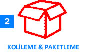
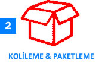

Arşiv Taşımacılığı

Arşiv taşıma işi çok önemlidir. Taşınması gereken hukuki, idari veya kurumsal tüm belgelerin emin ellere emanet edilmesi gerekir. Belgelerin veya evrakların değerleri baz alındığında bu taşıma işleminin oldukça titizlikle yapılması gereklidir. Arşiv taşımacılığı ile Öz Avcılar nakliyat olarak bu zamana kadar taşıma işinde en iyisini yapmaya çalıştık. Arşiv taşımacılığında görsel belgeler ve veri tabanı belgeleri gibi oldukça önemli olan evraklarında taşıma işlemleri basit yöntemlerle asla olamaz. Bunun için Öz Avcılar nakliyat ile iletişime geçin. Arşiv taşımacılığı kurumlar ve kişiler açısından büyük önem taşımaktadır. Tek bir belgenin bile zarar görmemesi için tüm tecrübemizi konuşturuyoruz. Bu alanda uzman taşıma firması olarak yıllardır listenin en zirvesinden hiç aşağı inmedik. Çünkü kendimize ve yaptığımız işe saygımız sonsuzdur. Hukuk ofisleri, adliyeler, noterler, sağlık kuruluşları gibi kurumlar taşınma durumlarında kaliteli ve deneyimli firma arayışı içine girerler. Artık hiçbir arayışa girmenize gerek yok. Çünkü Arşiv taşımacılığı konusunda profesyonel bir isim var.Öz Avcılar nakliyatile aklınız asla belgelerinizde kalmayacak. Arşivlerin kaybolmaması ve hiçbir zarar görmemesi için gerektiğinden çok ince detaylar halinde çalışıyoruz. Arşiv taşımacılığı diğer taşıma türlerinden oldukça farklıdır. Çünkü kaybolan bir evrakın asla telafisi yoktur. Çoğu firma böyle bir sorumluluğun altına girmezken, biz bu taşın altına elimizi hiç tereddüt etmeden koyuyoruz. Yani diyebiliriz ki, arşiv taşımacılığı işi uzman nakliyat şirketleri tarafından yapılmaktadır. Arşiv taşımacılığı esnasında tek tek tüm evraklar incelikle ve olması gereken kutulara yerleştirilir. Üzerlerine belli olacak şekilde uygun yazılar yazılarak taşıma işlemi başlar. Öz Avcılar nakliyat olarak amacımız, arşiv taşımacılığı sırasında her evraktan sorumlu olduğumuzu bilmek ve adımlarımızı ona göre atmaktır. Yapılan bir hata sonucu geri getirmesi mümkün olmayan bir taşımacılık yaptığımızın farkındayız ve ona göre davranıyoruz. Ancak aklınız asla bizde ve evraklarınızda kalmasın. İstediğiniz tarihte ve istediğiniz yere tüm belgeleriniz eksiksiz bir şekilde teslim edilir. Öz Avcılar nakliyat firmasının bu işte kendini ülkenin her köşesinde kanıtlamıştır. Bu mutluluğu en iyi bizler bilmekteyiz. Verdiğimiz söze sadık kalmak ve eksiksiz bir şekilde taşınan eşyaların teslimini yapmak bizi bu işe daha çok bağlıyor. Arşiv taşımacılığı sektöründe tabi ki çok sayıda firma vardır. Öz Avcılar nakliyat olarak arşiv taşımacılığı konusunda kendimize hiçbir firmayı rakip görmüyoruz. İşimizin kalitesine her zaman güveniyor ve varlığını sürdürmesi için elimizden geleni yapıyoruz. Profesyonel olan takım arkadaşlarımızla aldığımız arşiv taşımacılığı işini zamanında teslim etmenin gururunu ve mutluluğunu yaşıyoruz. Bizim firma olarak görünmez bir defterimiz mevcut. Bu defterde eşyaların zarar görmesi ve eşyaların kaybolması gibi cümleler asla yazmaz. Arşiv taşımacılığı önemini bildiğimizden bu görünmez defteri sadece biz görüyor, taşıma işlemini buna göre gerçekleştiriyoruz.


SERVİS HİZMET PROSEDÜRÜ
 



Hizmetlerimiz
Referans
ADRES
Kemalpaşa Namık Kemal Cd. No:27 34204Bağcılar/İstanbul
TEL 1 : 0212 432 77 33
TEL 2 : 0212 432 77 34
CEP : 0532 414 52 77
info@ozavcilarnakliyat.com
www.ozavcilarnakliyat.com